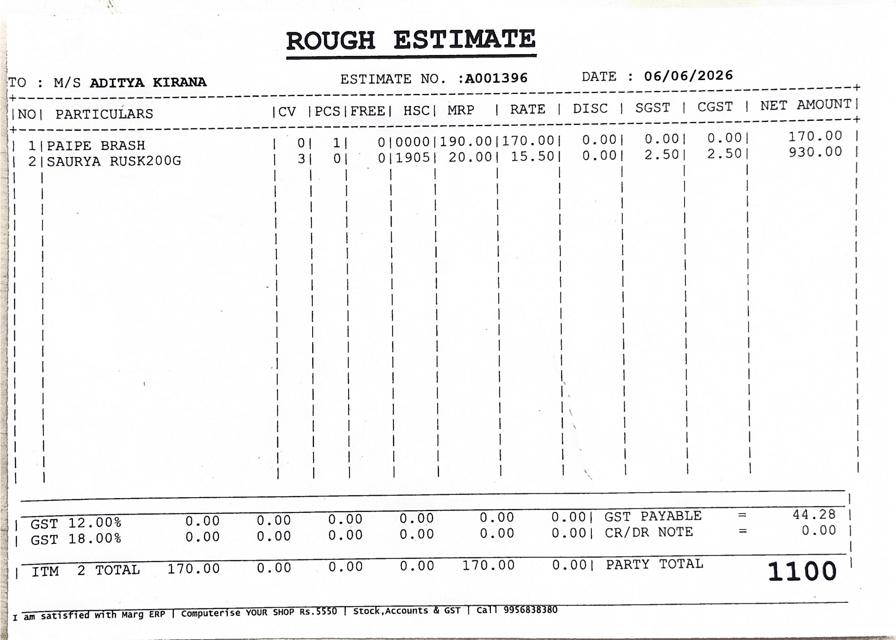
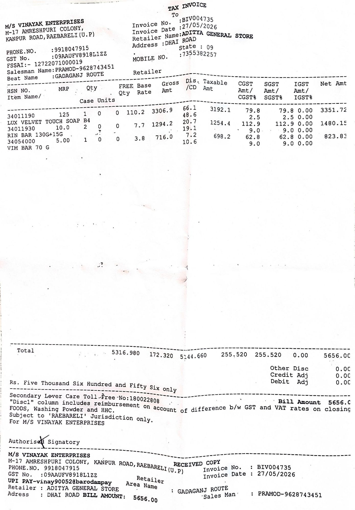

Scan or import
Use the on-device document scanner for crop, cleanup, rotation and review, or import an image or PDF.
Android app for kirana stock, bills and GST
Scan purchase receipts, review OCR item rows, update inventory, create customer bills, and share PDF or CSV records from one offline-first shop app.
Built around everyday shop work
Use the on-device document scanner for crop, cleanup, rotation and review, or import an image or PDF.
Confirm OCR rows, supplier, bill number, date, purchase rate, selling price, GST and units before saving.
Create sale bills, reduce stock automatically, track GST totals, see recent bills and export backups.
Core workflows
Purchase receipts, stock, sales billing and GST totals in one place.
Scan receipts with Google ML Kit document scanning, import image/PDF files, run OCR page by page, and manually add missing rows when a bill is unclear.
Search items, edit stock, unit, purchase rate, sale price, GST, low-stock alert and supplier aliases that help match future bills.
Select stocked items, auto-fill sale rate and GST, apply discounts, block sales when stock is insufficient, then save or share a PDF bill.
Review sales total, sales GST, purchase value, recent sales, bill history, supplier totals and customer totals.
Feature details
Detected rows are never saved blindly. The review screen keeps supplier, bill no, date, discount and every item editable.
Multi-page PDFs are rendered page by page for OCR, while image files can be shared into the app or chosen from storage.
Sales reduce stock immediately and stop when quantity is higher than available inventory.
Purchase and sale rows store GST percent, sale bills calculate tax, subtotal, discount and final total.
Sales bills can be reopened and shared, purchase bills keep supplier, bill number, row count and value.
Items, purchases and sales are stored locally in app preferences with JSON backup for moving or protecting shop records.
Real scan examples


Backup and sharing
The app can share a full JSON backup with item master, aliases, stock, purchases and sales. It can also share inventory CSV and sales CSV for spreadsheet use.
Current build
Version 1.4 is the latest APK present in this workspace, labeled store workflows debug.